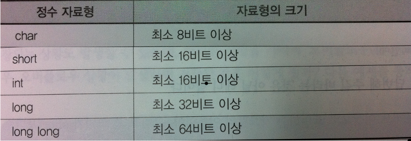

자료형과 변수 그리고 상수의 표현
C언어 스터디 2팀
발표자 : 조한영
기본 자료형(Data Type): <정수형>
자료형을 나누는 기준
- 기준 1 : 표현할 데이터의 종류 (실수 혹은 정수)
- 기준 2 : 바이트 크기
[any material that should appear in print but not on the slide]
정수 자료형의 종류
- short int는
short
- long int는
long
- long long int 는
long long
[any material that should appear in print but not on the slide]
정수 자료형의 크기
- char <= short <= int <= long <= long long
- 컴파일러 별로 자료형의 크기가 다르기 때문에 자료형의 크기는 정해지지 않습니다.

자료형을 잘못 선택 했어요!
- 언더 플로우 (underflow)
표현 범위값 보다 이하의 값을 표현 하려고 하였을시 발생되는 현상
- 오버 플로우 (overflow)
표현 범위값 보다 이상의 값을 표현 하려고 하였을시 발생되는 현상
[any material that should appear in print but not on the slide]
자료형의수가 두배 unsigned!!
unsigned를 붙여 주게 되면 signed 과 다르게 음의 값의 표현 을 하지않고 양의 값만 표현 합니다
결과적으로 양의 표현 범위의 값이 두배로 늘어 나게 됩니다.
- unsigned int : unsigend를 붙여 양의 값의 범위를 늘립니다.
- signed int : signed를 붙여 양,음수 의 표현을 모두 할수있습니다.
- int : signed를 떼고 사용합니다 (signed int 와 같습니다.)
[any material that should appear in print but not on the slide]
C언어의 기본 자료형(Data Type): <실수형>
정밀도가 사용된 이유
C언어의 기본 자료형(Data Type): <실수형>
일반적인 실수 자료형의표현
- 보편 적인 시스템에서의 자료형 별 데이터 표현 범위
[any material that should appear in print but not on the slide]
정수 자료형의 선택 기준
데이터를 처리하는 경우에 있어서 자료형 선택
메모리의 효율을 우선시 할까요?
연산속도를 우선시 할까요?
- 메모리 공간의 효율적 측면으로 본다면 범위에 맞는 자료형을 선택 합니다
- int형보다 작은 크기의 데이터를 가지고 덧셈 연산을 할경우 int 형으로 바뀌어서 연산을 하기 때문에
정수 계산을 할때는 int형을 쓰게 됩니다.
[any material that should appear in print but not on the slide]
Integer(Integral) Promition : 정수의 승격
- int 작은 크기의 데이터를 가지고 덧셈 연산을 할경우, 그 데이터를 int형으로 바꿔서 연산을 하게 된다.
[any material that should appear in print but not on the slide]
왜 하필 int형이야?
- 컴퓨터 시스템은 8비트 16비트 32비트 64비트 단위로 발전 해왔습니다.
- int 형은 이런 시스템에 맞추어 표현 범위가 달라지게 됩니다.
- int 형으로 데이터를 변환하는것이 시스템 처리상 가장 빠르게
처리 할수 있는 형태의 자료형으로 변환 한다는 의미 입니다.
[any material that should appear in print but not on the slide]
적절한 자료형의 선택 기준: 실수 자료형 기준
- float? double?
-
float형은 범위가 너무 작은듯 하다. 하지만 long double은 너무커 불필요할듯 하다
어떤걸 선택 할까?
- double을 선택 하라
-
double을 선택함으로서 오차를 줄여 보다 안정적으로 만들수 있다.
- 정밀도
-
실수 자료형은 표현방식의 특성상 오차가 존재하기 때문에 정밀도가 우선시 되야한다.
[any material that should appear in print but not on the slide]
변수의 선언방식과 조건
변수는 선언(Declaration) 한다고 표현한다.
- 변수의 이름이 되기 위한 조건
- 규칙.1 변수의 이름은 알파벳, 숫자, 언더바(_)를 조합한다.
ex) int rumidier_lesson_05;
- 규칙.2 변수의 이름은 대소문자가 구분된다.(money와 MONEY는 다르다)
ex) int money;
int MONEY;
- 규칙.3 변수의 이름은 숫자로 시작할 수 없고. C언어의 문법을 구성하는, 의미를 지니는
키워드는 사용이 불가능 하다.
ex) int 7Thval;
- 규칙.4 변수의 이름에는 공백이 포함될 수 없다.
ex) int name Man;
[any material that should appear in print but not on the slide]
변수의 상대적인 개념 상수!
무엇을 상수(Constant)라 하는가?
- 상수란 변경이 불가능한 수를 의미한다
- 정수 2와 정수 5는 메모리 공간에 저장되지만 변경시킬수 있는 방법이 없다 이것이 상수다!
- n은 두 정수의 연산값을 저장할수 있고 저장된 값을 변경 시킬수 있다 이것이 변수다!
[any material that should appear in print but not on the slide]
리터럴(Literal)상수와 심볼릭(Symbolic)상수
- 리터럴(Literal) 상수
- 변수와 달리 별도의 이름을 갖지 않는 상수들을 가리켜 '리터럴 상수'(글자 그대로의)라 한다.
- 정수 리터럴 (상수)
예)10, 20, 30, 40, 50
- 실수 리터럴 (상수)
예)0.1, 0.2, 0.3, 0.4, 0.5
- 문자 리터럴 (상수)
예)'A', 'B', 'C', 'D', 'E'
- 정수 리터럴 (상수)
예)"ABCDE"
- 심볼릭(Symbolic) 상수
- int num = 10; 변수 num의 값이 변경되지 않도록 막는다면 num은 10이라는 '심볼릭 상수'(상징하는)를 의미 한다.
[any material that should appear in print but not on the slide]
const 상수
일반적인 네이밍 규칙
- 상수의 이름은 대문자로 표시 한다.
- 둘 이상의 단어를 묶을 때는 언더바(_)로 이어서 짓는다.
[any material that should appear in print but not on the slide]
const 사용
- 올바른 사용
int main (void)
{
const double PI = 3.1515;
}
- 잘못된 사용
int main (void)
{
MAX_LEN = 280; // 값의 변경 불가! 컴파일 에러!
}
[any material that should appear in print but not on the slide]
정수형 상수에 붙일 수 있는 접미사들
- 정수형 상수에 붙이는 접미사는 실수형과 다르다.
- 접미사는 대소문자를 가리지 않는다.
- char형은 접미사로 정의 되어 있지 않았다.
왜? char형은 문자를 표현하기 위해 디자인 되었기 때문이다.
- short 사용빈도수가 낮아 정의 되지 않았다.
short형 상수 위치에 숫자가 오면 int형이 아닌 short형으로 인식한다.
[any material that should appear in print but not on the slide]
정수형 상수에 붙일 수 있는 접미사들
[any material that should appear in print but not on the slide]
실수형 상수에 붙일 수 있는 접미사들
- 접미사 L
L은 정수형에 오느냐 실수형에 오느냐에 따라 내용이 달라진다.
[any material that should appear in print but not on the slide]